Acordei no improvisado hotel Beira Rio em Lauro Muller. Não tinha café da manhã incluído. Arrumei tudo na moto, paguei o quarto, me despedi do dono, e segui novamente para a subida da Serra do Rio do Rastro.
No caminho parei no posto de gasolina de novo para beber um café. Não precisou abastecer, rodei muito pouco no dia anterior. Puxei conversa com um casal que estava numa BMW que tinha adesivos de vários países da América do Sul colados no baú traseiro, batemos um breve papo, e fui embora. Subi de novo a serra, boas curvas, o tempo estava bem melhor, o sol até mostrava a cara. Não peguei aquela intensa cerração na estrada.
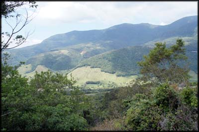No mesmo mirante do dia anterior, parecia que as nuvens dariam uma trégua...
Mas conforme fui subindo, e chegando nos mirantes ao longo da Rio do Rastro, continuava a mesma neblina forte. Agora dava até para ver o mirante, mas as paisagens continuavam encobertas pela espessa cerração.
Não adianta, ali se pilota no meio das nuvens quase sempre, o tempo tem que estar muito bom para poder enxergar as belas vistas. Fazer o quê.
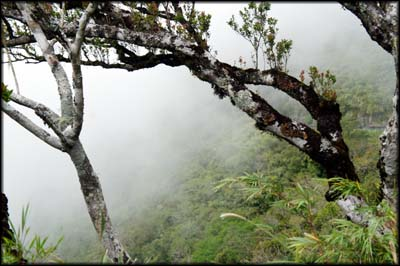Conforme ia subindo, a visibilidade diminuía...
Passei em frente a entrada de um parque eólico pelo qual tinha passado também sem perceber no dia anterior, por causa da neblina. Decidi entrar pela estradinha de terra, e pilotei um pouco em um offroad agradável, com um piso de pedrinhas.
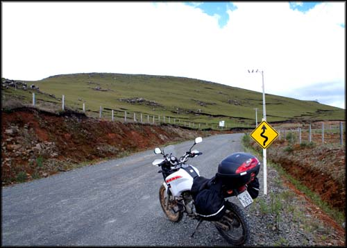Offroad leve para chegar próximo da usina eólica
Até que cheguei até onde dava para ver aquelas fantásticas estruturas de hélices, que geram energia elétrica com a força do vento na região. Não faço ideia de quantas estruturas do tipo haviam, perdia de vista onde acabava. Tirei algumas fotos, o vento não estava forte, o sol raiava entre as nuvens, o clima estava perfeito para um bom passeio de moto.
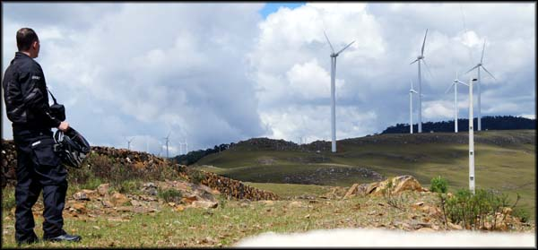Geradores da usina eólica próxima à Serra do Rio do Rastro, um belo visual
Depois voltei para a pista da Rio do Rastro, e segui até o ponto mais alto, parando no mirante principal de novo. E de novo, não dava para tirar fotos, tudo encoberto. Mas pude ver muita coisa que não tinha conseguido no dia anterior. Logo ao lado tem duas lanchonetes, estacionamento, e uma base da PM. Caramba, bem do lado, no dia anterior não tinha como saber que aquilo estava lá. Ri sozinho.
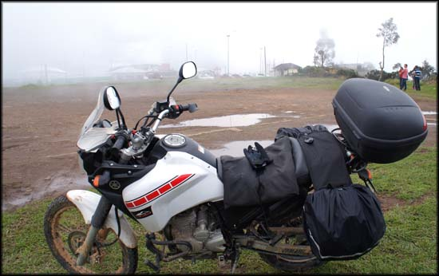De novo no mirante principal. Ao fundo as estruturas que eu não conseguira ver no dia anterior...
Fui em frente às lanchonetes, vários turistas de carro, e uns cinco caras em motos pequenas. Conversei um pouco com os motociclistas, mas o papo foi chato e desinteressante.
Havia vários quatis, bichinhos animados e divertidos. Ficam caçando as migalhas dos lanches que caem no chão e revirando as latas de lixo, muito engraçado.
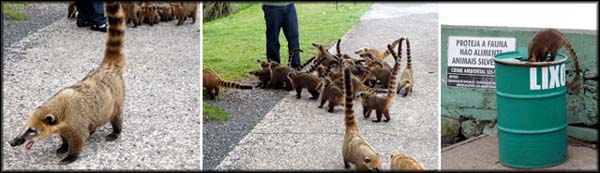Quatis que ficam no mirante, catando comida
Tirei umas fotos e voltei pra moto, agora dava para enxergar a pista pelo ao menos, e eu poderia finalmente chegar no tal Morro da Igreja. Segui em direção a Urubici/SC, passando por lugares bacanas, estradas boas.
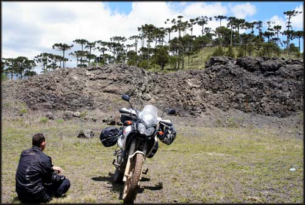Parada para descansar em uma pequena pedreira ao lado da estrada
Diversos pequenos e humildes vilarejos rurais, algumas fazendas. Desse ponto em diante passei por diversos grupos de motociclistas, a região é muito visitada por moto-turistas nos fins de semana. Um clima bacana.
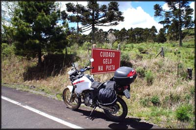A caminho do Morro da Igreja
Como é bom pilotar por estradas boas e lugares desconhecidos. Ver uma paisagem nova sem esperar, uma geografia diferente da habitual. E com rumos incertos, com o mínimo de planejamento, cada surpresa é realmente surpresa.
Na estrada vi uma placa indicando "Cascata do Avencal, 1 Km". Curioso, resolvi ir ver; Era uma estrada de chão bem ruim, bem esburacada e com muitas pedras soltas, mas resolvi tentar. Fui passando, e pedindo licença aos bois e vacas que pastavam por todo o lugar e fechavam a pista. Muitas ovelhas também, bem branquinhas, como as de desenho animado.
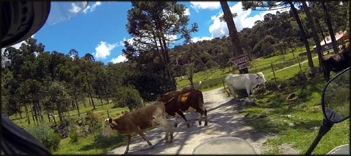Invadindo o pasto dos bichos...
Depois de uns 20 minutos rodando, cheguei no fim, em uma fazenda com porteira fechada. Não sei se era pra abrir a porteira e continuar, mas já tinha rodado mais do que a distância informada na placa. Desisti, e resolvi voltar tudo e retomar meu rumo.
Voltando à estrada, passei por mais placas indicando pontos de interesse turístico. “Inscrições Rupestres”, vamos ver o que é isso. Uns desenhos doidos gravados em uma rocha, datados sei lá de quanto tempo atrás, não me interessei muito. E ainda tomei uma corrida de uns marimbondos que lá fizeram seu ninho.
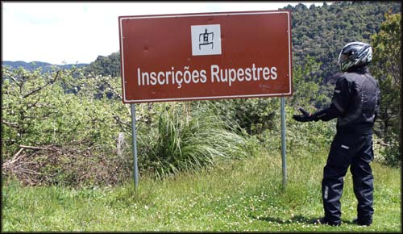Ponto turístico que não curti...
Voltei para a moto e continuei no trajeto, e chegando na cidade de Urubici parei em uma simpática padaria chamada Confeitaria Colonial, onde almocei um sanduíche natural bem decente, com um refrigerante.
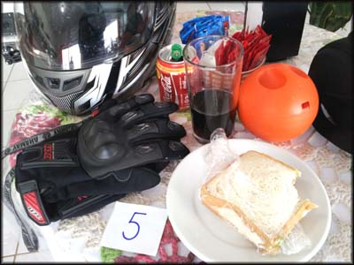O almoço do dia ...
Retornei para a estrada, e achei a placa indicando o caminho para o Morro da Igreja. Mais uma boa pista, e diversos grupos de motociclistas, a maioria em BMW's GS800, uma febre o uso dessas motos na região.
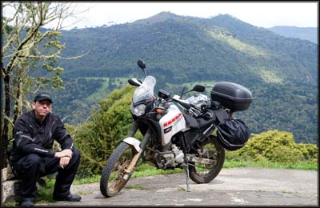Mais uma pausa em mirante antes de chegar no topo
Fui subindo a íngreme serra, devagar e curtindo a paisagem. E devagar também porque o asfalto ali está bem mal conservado. Imagino que, por ser área militar, o tráfego de veículos pesados acabe detonando a rua.
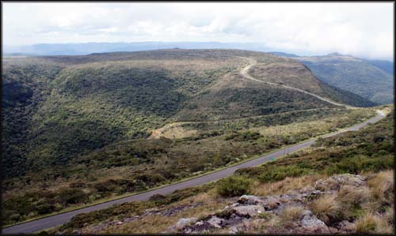Já no topo, a bela estradinha
Continuei subindo, até o topo, no limite onde fica a base militar do CINDACTA-II. Lá tem o mirante com uma vista espetacular, mas que pra mim não existia hehe muita cerração, não dava para ver nada ali também.
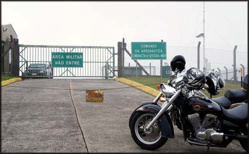Desse portão em diante é proibida a entrada, área militar...
Um cara que tinha vindo do Paraná de carro para ver a paisagem estava decepcionado, se lamentando, e ficou resmungando comigo por um tempo. E um grupo em motos chopper também, todo mundo doido pra admirar o visual e tirar fotos, todo mundo se deu mal. Que pena, ninguém podia curtir aquela paisagem que todo mundo sabia que estava escondido atrás daquelas enormes nuvens brancas. Faz parte. Mais um motivo a me fazer retornar àquele lugar um dia, onde costuma até nevar no inverno.
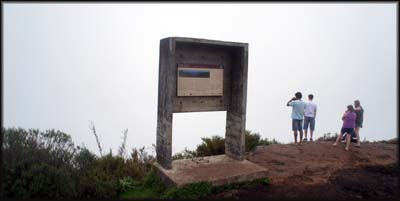Outros turistas, esperando o milagre que não veio
Fiquei lá no topo por meia hora ou mais, esperando, pensando na vida, esperançoso de talvez as nuvens darem uma folga. Não deram, e de olho no horário, resolvi ir embora.
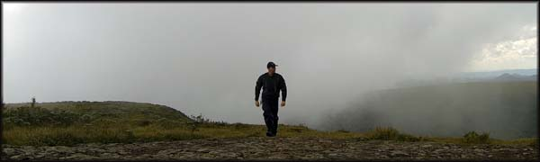Desci tudo, voltei até Urubici. Enquanto rodava, cheguei a pensar se não valeria a pena pegar agora no sentido oposto, em direção à Serra do Corvo Branco, fazendo o caminho inverso do que eu tinha tentado no dia anterior. Mas a tarde já avançava para seu fim, e eu não tinha a menor noção de onde dormiria naquele dia, achei melhor voltar e seguir viagem mais pro sul.
Fui voltando, passei por Bom Jardim da Serra, cheguei de novo na Serra do Rio do Rastro. A cerração aumentou, e passei a diminuir a velocidade, sem enxergar 2 metros à frente.
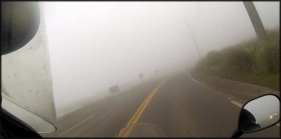Neblina tomou conta de novo, e eu preocupado com os carros que vinham atrás
E começou a ficar bem frio. E o frio aumentou, conforme as nuvens tomavam conta de tudo, e eu me vendo submerso em névoa branca. O a luz do farol da moto estourava contra a neblina, e piorava a visibilidade. Até que passei novamente perto do parque eólico, e vi uma lanchonete de beira de estrada.
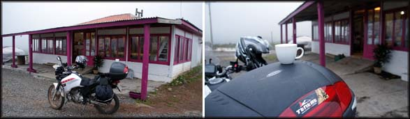Café salvador, o frio ficou tenso...
Parei para beber um café e esquentar as mãos, estava congelando. Vesti a roupa de chuva para esquentar mais. Enquanto eu bebia meu café mega quente, ouvia um barulho de carro quebrado e arrastando vindo de algum canto, mas não conseguia identificar de onde. Até que surgiu cortando a neblina, uma Fiat Uno com o pneu estourado e paralamas todo amassado. Deve ter se perdido na forte neblina e batido na mureta da estrada. Tinha bastante gente no carro, não precisavam de ajuda.
Paguei o café, e continuei minha segunda descida da Serra do Rio do Rastro, de forma muito cautelosa, a cerração tinha voltado forte. Cheguei de volta em Lauro Muller bastante cansado, e fiquei na dúvida do que fazer. Dormir ali de novo seria besteira, ainda teria mais 1 hora ou mais antes de escurecer... decidi ir para Criciúma, continuar em direção ao sul, pensando que lá deveria ser fácil arranjar hospedagem, já que é uma cidade grande.
Desci de Lauro Muller, pegando a SC-447 sentido Criciúma/SC. Logo que rodei uns 30 quilômetros, cheguei em uma parte com um desvio. A estrada estava em obras. Putz, 10Km de offroad numa estrada de chão mal cuidada, passando por dentro de vilarejos com quebra-molas, velocidade baixa... me ferrei de novo.
Passei por Treviso e Siderópolis, e cheguei em Criciúma já de noite, derrotado. A sinalização era inexistente ou quando existia era confusa e imprecisa. Rodei feito tonto. Tentava ir devagar para ver as placas, mas os motoristas de carros de passeios estavam muito agressivos, andando colados, dando fechadas... comecei a pegar raiva do lugar.
Parei em um posto de gasolina para perguntar sobre hospedagem. Uma frentista me disse que os hotéis da cidade eram pouquíssimos e caros, e sugeriu que eu voltasse na estrada que havia um motel, que sairia mais barato. Consultei no celular a oferta de hotéis, e o que ela falou era verdade. Eram poucos, e com diárias próximas de 200 reais ou mais. Pra mim não dava.
Resignado, eu até aceitei a sugestão e segui o caminho que ela indicou, procurando o tal motel para pernoitar, mas acabei me perdendo de novo. Parei em outro posto de gasolina, pedi informações. Um frentista não sabia, perguntou a outro, um terceiro mais novo e cheio de marra passou falando gracinha, algo como "ele tá achando que vai achar hotel cinco estrelas...". Apesar desse babaca, um outro frentista depois chegou perto, quando eu já me equipava para sair, e disse que acha que eu poderia achar hospedagem em uma cidade próxima chamada Nova Veneza, que ficava a 20km dali. Agradeci e segui o caminho que ele indicou, um pouco desconfiado diante do tratamento que recebi naquele posto, mas não via muita opção de escolha.
Foram 20Km doídos, eu já estava muito cansado, os olhos vermelhos e ardendo, e começava a duvidar se haveria hospedagem lá mesmo ou era só mais uma sacanagem dos caras do posto. Até que cheguei no portal da cidade e respirei aliviado.
Logo na entrada havia um hotel bem grande e com aparência de recém construído, mas com cara de ser caro, luxuoso. Passei direto e resolvi explorar a cidade para ver se havia outras opções. Rodei um pouco por pequenas ruas, o cansaço já batendo forte, e desisti. Voltei para a entrada da cidade, e fui no tal hotel luxuoso para ver o preço.
Uma menina simpática me atendeu na recepção. O quarto mais em conta custava R$ 180,00. Bem caro para minhas pretensões nessa viagem sem destino certo... perguntei se ela não indicaria outro lugar para um simples pernoite, e ela disse que haviam mais dois hotéis na cidade, e que seriam mais baratos. E até telefonou para os dois, e me disse que havia vaga no Hotel Veneza por R$ 60,00. Perfeito! Agradeci muito a ajuda, e rumei para o local indicado.
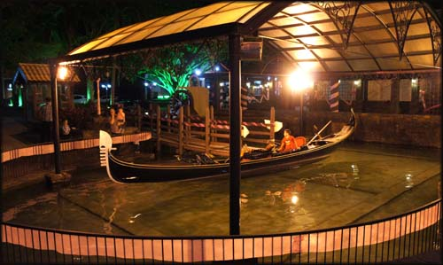Gôndola decorativa no lago
Entrando mais na cidade, fiquei boquiaberto, chegando na praça principal, onde se localizava o hotel no qual eu ficaria aquela noite. A cidade de Nova Veneza é toda arrumadinha, limpa, iluminada, decorada, bonito mesmo. Na praça tem um lago artificial com uma gôndola, imitando o clima de Veneza, na Itália. Depois descobri que inclusive eles reproduzem o Carnaval de Veneza lá também, imitando a festa italiana. Deve ser bacana.
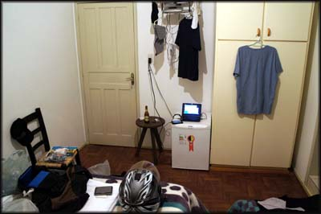A já tradicional bagunça no quarto, tudo espalhado e roupas secando
Me dirigi ao hotel, e um senhor que arrumava a geladeira de refrigerantes veio me atender. Confirmou o preço de R$ 60,00 para passar a noite, com café da manhã incluído. Ele abriu uma garagem de carro onde deixei a moto, subi com as bolsas para o quarto, que era muito bacana. Coloquei a câmera para fazer backup, lavei umas peças de roupa, e desci para explorar.
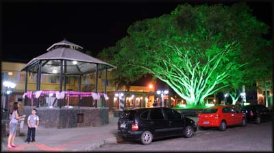Praça decorada em Nova Veneza
Tinha uns 5 restaurantes no entorno da praça, e ao contrário das cidades onde fiquei anteriormente, todos cheios. Nova Veneza é uma cidade romântica, muitos casais e famílias com crianças. Eu me senti meio excluído, um aventureiro solitário e com roupas não adequadas para um jantar a luz de velas hehehe escolhi um que funcionava em uma bela e enorme casa, onde tinha um balcão e passava um jogo de futebol. Achei que ali eu destoaria menos do resto do povo.
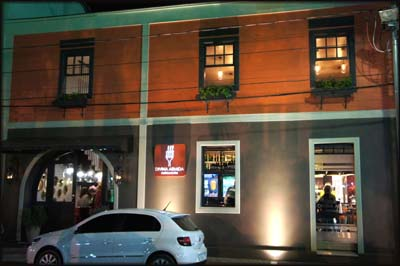Fachada do Restaurante Divina Armida
O restaurante se chama Divina Armida. Na parte de trás era o restaurante em si, mas eu não tinha uma namorada para agradar, fiquei na área da frente, onde tem o balcão, e uma decoração bem diferente e legal.
Ninguém veio me atender, eu fui no balcão e perguntei a um rapaz como fazia para pedir. E percebi que eles estavam um pouco enrolados com o restaurante cheio, mas logo ele veio e me trouxe o cardápio e passou a me dar atenção. Como notei, a exemplo de outros lugares no interior, ali trabalhava toda a família e mais alguns garçons contratados.
No cardápio todos os pratos eram para duas pessoas, e eu não posso comer muito à noite por causa do estômago. Resolvi montar meu prato com petiscos, e escolhi uma carne com torradas do couvert, umas cervejas e tudo ficou bom. Custou uns R$ 60,00.
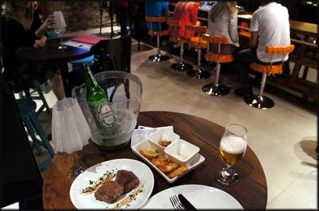O sabor é bom, e o preço justo
Enquanto comia e degustava a cerveja, fui lembrando de todos os lugares que eu já tinha passado desde que saí do Rio, as chuvas, os perrengues, as belas estradas, os visuais. Não pude cruzar a Serra do Corvo Branco, mas aproveitei parcialmente a Serra do Rio do Rastro e o Morro da Igreja. O dia rendeu.
No final da noite ainda bati um breve papo com a família que comanda o bar-restaurante, ficaram curiosos com as aventuras em duas rodas, foi legal, e o pessoal é bem simpático.
Já era tarde, eu estava moído, e no dia seguinte queria ir para Cambará do Sul, onde sabia que poderia ver de perto alguns cânions fantásticos, segundo imagens que tinha visto na internet. Subi para o hotel com o intuito de estudar o mapa de estradas até lá, mas não tive muito saco pra isso. Deixei pra ver melhor no dia seguinte.